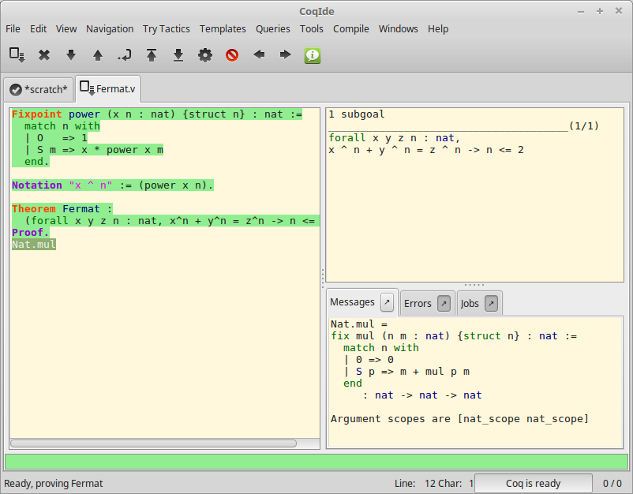

Coq Integrated Development Environment¶
The Coq Integrated Development Environment is a graphical tool, to be used as a user-friendly replacement to coqtop. Its main purpose is to allow the user to navigate forward and backward into a Coq vernacular file, executing corresponding commands or undoing them respectively.
CoqIDE is run by typing the command coqide on the command line. Without argument, the main screen is displayed with an “unnamed buffer”, and with a filename as argument, another buffer displaying the contents of that file. Additionally, coqide accepts the same options as coqtop, given in The Coq commands, the ones having obviously no meaning for CoqIDE being ignored.

A sample CoqIDE main screen, while navigating into a file Fermat.v, is shown in the figure CoqIDE main screen. At the top is a menu bar, and a tool bar below it. The large window on the left is displaying the various script buffers. The upper right window is the goal window, where goals to be proven are displayed. The lower right window is the message window, where various messages resulting from commands are displayed. At the bottom is the status bar.
Managing files and buffers, basic editing¶
In the script window, you may open arbitrarily many buffers to edit. The File menu allows you to open files or create some, save them, print or export them into various formats. Among all these buffers, there is always one which is the current running buffer, whose name is displayed on a background in the processed color (green by default), which is the one where Coq commands are currently executed.
Buffers may be edited as in any text editor, and classical basic editing commands (Copy/Paste, …) are available in the Edit menu. CoqIDE offers only basic editing commands, so if you need more complex editing commands, you may launch your favorite text editor on the current buffer, using the Edit/External Editor menu.
Trying tactics automatically¶
The menu Try Tactics provides some features for automatically trying to solve the current goal using simple tactics. If such a tactic succeeds in solving the goal, then its text is automatically inserted into the script. There is finally a combination of these tactics, called the proof wizard which will try each of them in turn. This wizard is also available as a tool button (the "information" button). The set of tactics tried by the wizard is customizable in the preferences.
These tactics are general ones, in particular they do not refer to particular hypotheses. You may also try specific tactics related to the goal or one of the hypotheses, by clicking with the right mouse button on the goal or the considered hypothesis. This is the “contextual menu on goals” feature, that may be disabled in the preferences if undesirable.
Proof folding¶
As your script grows bigger and bigger, it might be useful to hide the proofs of your theorems and lemmas.
This feature is toggled via the Hide entry of the Navigation menu. The
proof shall be enclosed between Proof. and Qed., both with their final
dots. The proof that shall be hidden or revealed is the first one
whose beginning statement (such as Theorem) precedes the insertion
cursor.
Vernacular commands, templates¶
The Templates menu allows using shortcuts to insert vernacular commands. This is a nice way to proceed if you are not sure of the syntax of the command you want.
Moreover, from this menu you can automatically insert templates of complex
commands like Fixpoint that you can conveniently fill afterwards.
Queries¶
We call query any vernacular command that does not change the current state,
such as Check, Search, etc. To run such commands interactively, without
writing them in scripts, CoqIDE offers a query pane. The query pane can be
displayed on demand by using the View menu, or using the shortcut F1.
Queries can also be performed by selecting a particular phrase, then choosing an
item from the Queries menu. The response then appears in the message window.
The image above shows the result after selecting of the phrase
Nat.mul in the script window, and choosing Print from the Queries
menu.
Compilation¶
The Compile menu offers direct commands to:
- compile the current buffer
- run a compilation using make
- go to the last compilation error
- create a Makefile using coq_makefile.
Customizations¶
You may customize your environment using the menu Edit/Preferences. A new window will be displayed, with several customization sections presented as a notebook.
The first section is for selecting the text font used for scripts, goal and message windows.
The second section is devoted to file management: you may configure automatic saving of files, by periodically saving the contents into files named #f# for each opened file f. You may also activate the revert feature: in case a opened file is modified on the disk by a third party, CoqIDE may read it again for you. Note that in the case you edited that same file, you will be prompted to choose to either discard your changes or not. The File charset encoding choice is described below in Character encoding for saved files.
The Externals section allows customizing the external commands for compilation, printing, web browsing. In the browser command, you may use %s to denote the URL to open, for example: firefox -remote "OpenURL(%s)".
The Tactics Wizard section allows defining the set of tactics that should be tried, in sequence, to solve the current goal.
The last section is for miscellaneous boolean settings, such as the “contextual menu on goals” feature presented in the section Try tactics automatically.
Notice that these settings are saved in the file .coqiderc of your home directory.
A Gtk2 accelerator keymap is saved under the name .coqide.keys. It is not recommended to edit this file manually: to modify a given menu shortcut, go to the corresponding menu item without releasing the mouse button, press the key you want for the new shortcut, and release the mouse button afterwards. If your system does not allow it, you may still edit this configuration file by hand, but this is more involved.
Using Unicode symbols¶
CoqIDE is based on GTK+ and inherits from it support for Unicode in its text windows. Consequently a large set of symbols is available for notations.
Displaying Unicode symbols¶
You just need to define suitable notations as described in the chapter Syntax extensions and interpretation scopes. For example, to use the mathematical symbols ∀ and ∃, you may define:
- Notation "∀ x : T, P" := (forall x : T, P) (at level 200, x ident).
- Toplevel input, characters 39-40: > Notation "∀ x : T, P" := (forall x : T, P) (at level 200, x ident). > ^ Error: The reference T was not found in the current environment.
- Notation "∃ x : T, P" := (exists x : T, P) (at level 200, x ident).
- Toplevel input, characters 39-40: > Notation "∃ x : T, P" := (exists x : T, P) (at level 200, x ident). > ^ Error: The reference T was not found in the current environment.
There exists a small set of such notations already defined, in the
file utf8.v of Coq library, so you may enable them just by
Require Import Unicode.Utf8 inside CoqIDE, or equivalently,
by starting CoqIDE with coqide -l utf8.
However, there are some issues when using such Unicode symbols: you of course need to use a character font which supports them. In the Fonts section of the preferences, the Preview line displays some Unicode symbols, so you could figure out if the selected font is OK. Related to this, one thing you may need to do is choosing whether GTK+ should use antialiased fonts or not, by setting the environment variable GDK_USE_XFT to 1 or 0 respectively.
Defining an input method for non-ASCII symbols¶
To input a Unicode symbol, a general method provided by GTK+ is to simultaneously press the Control, Shift and “u” keys, release, then type the hexadecimal code of the symbol required, for example 2200 for the ∀ symbol. A list of symbol codes is available at http://www.unicode.org.
An alternative method which does not require to know the hexadecimal code of the character is to use an Input Method Editor. On POSIX systems (Linux distributions, BSD variants and MacOS X), you can use uim version 1.6 or later which provides a LaTeX-style input method.
To configure uim, execute uim-pref-gtk as your regular user. In the "Global Settings" group set the default Input Method to "ELatin" (don’t forget to tick the checkbox "Specify default IM"). In the "ELatin" group set the layout to "TeX", and remember the content of the "[ELatin] on" field (by default Control-\). You can now execute CoqIDE with the following commands (assuming you use a Bourne-style shell):
$ export GTK_IM_MODULE=uim
$ coqide
Activate the ELatin Input Method with Control-\, then type the sequence \Gamma. You will see the sequence being replaced by Γ as soon as you type the second "a".
Character encoding for saved files¶
In the Files section of the preferences, the encoding option is related to the way files are saved.
If you have no need to exchange files with non UTF-8 aware applications, it is better to choose the UTF-8 encoding, since it guarantees that your files will be read again without problems. (This is because when CoqIDE reads a file, it tries to automatically detect its character encoding.)
If you choose something else than UTF-8, then missing characters will be written encoded by x{....} or x{........} where each dot is an hexadecimal digit: the number between braces is the hexadecimal Unicode index for the missing character.